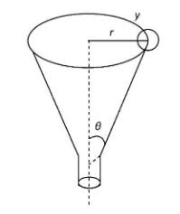
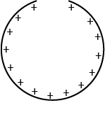

Question 1: A particle is to slide along the horizontal circular path on the inner surface of the funnel as shown in the figure. the surface of the funnel is frictionless. What must be the speed of the particle( in terms of r and theta) if it is to execute this motion?
Question 2: A ring of radius 0.5m has a gap of 0.002\(\pi\)m. if the ring carries a charge of +1.0C distributrd uniformly along it,then the electric field at the centre of the ring is
Question 3: A carbon rod of resistance Rc and a metal rod of resistance Rm are connected in series. Let their linear temperature coefficients of resistivity have magnitudes αc and αm , respectively. The condition that the net resistance would be independent of temperature is
Question 4: The 2's compliment of 1111 1111 is
Question 5: Two tuning forks A and B are struck instantaneously to obtain Lissajous figures. The figures go through a complete cycle in 20 s. Fork A is located with wax, so that the cycle period changes to 10 s. If the frequency of fork B is 256.10 Hz, what is the frequency of fork A after loading?
Question 6: Consider a classical harmonic oscillator in thermal equilibrium at a temperature T . If the spring constant is changed to twice its value isothermally, then the amount of work done on the system is
Leave a Comment